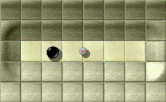
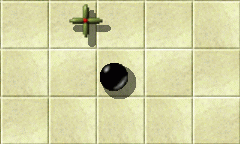
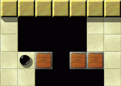

Level des MonatsJeden Monat werfen wir einen näheren Blick auf einen herausragenden Level. Herausragende Levels sind dabei solche, die sich durch die höchsten Bewertungen durch die Spieler auszeichnen, und dabei zugleich von genügend vielen Spielern auch bewertet wurden. Es ist also Ihre Wahl, die den Level des Monats bestimmt. Bitte werten Sie Levels, nachdem Sie sie gespielt haben, und vergessen Sie nicht, die Wertungen zusammen mit Ihren Spielergebnissen zum Ende eines jeden Monats uns zuzusenden. Sie können alle vorigen Level des Monats in unserem Archiv finden. Dezember 2007: „Temple of Gold“ von Jacob Scott und Ronald Lamprecht
Enigma VII # 24 'Temple of Gold'
Der Whirlpool der antiken Göttin Willkommen, liebe Mitmurmler, und lasst uns bitte still schweigen, da wir die geheiligten Hallen des „Tempel of Gold“ betreten, den Level des Monats Dezember. Viele hielten ihn für ein bloßes Märchen. Diese Skeptiker werden wir widerlegen, indem wir gemeinsam das Innere des Tempels erkunden, selbst die Räume, die als unerreichbar eingeschätzt wurden, selbstverständlich mit dem nötigen Respekt vor den altehrwürdigen Traditionen dieses heiligen Ortes, und mit äußerster Vorsicht, um nicht in eine der Fallen zu treten, die vor langer Zeit von den Gründern dieses Tempels für unwillkommene Gäste gelegt wurden. Wir werden geleitet von den Berichten zweier unserer Kollegen, die es nicht nur geschafft haben, den goldenen Gefahren des Tempels zu trotzen, sondern sich auch Zutritt zu den vier Altarräumen verschafft und die heiligen oxydischen Steine erleuchtet haben. Diese Wagemutigen, wert unserer Bewunderung, sind Taztunes und Craven. Auch wurden uns detaillierte Beschreibungen vom Architekten dieses Gebäudes zugesandt, dem erstaunlichen Herrn Jacob Scott, und von Herrn Ronald Lamprecht, dieses Mal in der Rolle des Sicherheitsbeauftragten. Später wird Mitglied Daydreamer über seine Beobachtungen einer geheimen Zeremonie berichten, die im Tempel abgehalten wird.
Anstelle ermüdender statistischer Anhäufungen, diesmal ein paar kurze „Alien Glyphs“:
9.25(8)9.13(8)9.11(9)9.00(5)Wie immer finden Sie weitere Details im LotM-Archiv. Erfahren Sie eine Art der mystischen Empfindung!Ich kann mir keinen Level vorstellen, der besser als erste Jubiläumsausgabe des LdM-Artikels geeignet wäre, als „Temple of Gold“. Zum zehnten Male bereits „werfen wir einen näheren Blick auf einen herausragenden Level“. Weihnachten steht bevor, was ebenso als exzellenter Level beschrieben werden kann, wenn auch nicht von enigmatischem Ursprung, mit einer starken Betonung auf die Erforschung, nicht nur des Haufens von Weihnachtsgeschenken unter dem Baum, sondern auch des Inneren der Seele, wo sich große Haufen an Müll während des Jahres angesammelt haben, Überbleibsel unschöner Erfahrungen alltäglicher Reibereien. Zu dieser fröhlichen Gelegenheit ist es doch eine große Erleichterung, schließlich den inneren goldenen Tempel zu betreten und die Außenwelt hinter sich zu lassen. Und genau dasselbe geschieht, während man Enigmas goldenen Tempel erforscht: Nichts anderes zählt! 
Im schwarzen Glitter, ein Murmelritter,
Den ganzen Tag, die Nacht ebenso, Den Weg entlang rollend, ein Lied anstimmend - Auf der Suche nach Templo Dorado. Lassen Sie uns die Gelegenheit wahrnehmen, einen Blick zurück auf den ersten Level des Monats zu werfen, „Island Labyrinth“, einer weiteren herausragenden Kreation von Jacob. „Dieser Level lässt die Realität verblassen“ schrieb Alejandro über ihn, und meint dabei dasselbe, was ich über „Temple of Gold“ gerade gesagt habe. Andere prominente Statements, die man wortwörtlich auch auf „Temple of Gold“ beziehen kann, lauteten: „Stück für Stück setzen sich die Teile des Puzzles zusammen, wenn man mit der Murmel diese faszinierende Landschaft erforscht“ (Taztunes) „Für mich drückt dieser Level den wahren Geist von Enigma aus“ (Ronald) „Es wäre auch eine Schande, einfach nur durch diesen schönen Level hindurchzueilen“ (Ronald) „Einer der einnehmendsten Aspekte dieses Levels ist das durch und durch konsistente Design, das Jacob ihm gegeben hat“ (Andreas) Fast alle Spieler, die je einen Blick auf „Island Labyrinth“ geworfen haben, werden die Stilkombination von st-rock1, fl-water und fl-leaves mit diesem Level assoziieren. Und in der selben Weise ist die signifikante Kombination von st-yellow und fl-sahara in Zukunft untrennbar verbunden mit „Temple of Gold“. Es ist im wesentlichen dieses Farbdesign, das einen dazu bringt, eine Form der mystischen Empfindung zu erfahren, der Szenerie angemessen. „ 'Temple Of Gold' sollte an eine Art exotischen Tempel erinnern“„Temple of Gold“ war ein weiterer meiner Versuche,
wie zuvor „Elaborate“, einen großen erforschungs-orientierten Level zu
erschaffen. Es war mir daran gelegen, den Schwerpunkt des Levels auf die
Entdeckung der verschiedenen Räume und der darin enthaltenen Objekte zu legen,
ohne dass der Spieler sich allzuviele Sorgen darum machen muss, aus
irgendwelchen dummen Gründen zu sterben. Daher habe ich nur Weniges hinzugefügt,
was einen vorsichtigen Spieler in Lebensgefahr bringen könnte, wovon das
Bedrohlichste ein allerdings ziemlich langsamer Rotor in einem der Räume sein
dürfte, und ich habe die Räume weitestgehend offen gehalten.
Die wahre Herausforderung des Levels resultiert aus seiner
Nonlinearität, wobei zunächst überhaupt nicht ersichtlich ist, was an einer
bestimmten Stelle getan werden muss. Mir bereiten diese konzeptuellen Puzzles
eine Menge Vergnügen, was auch der Grund dafür ist, dass ich es für wichtig
erachtet habe, einen Level zu gestalten, der den Spieler dazu bringt, sich
sowohl mit der Kugel als auch gedanklich von Raum zu Raum zu bewegen, anstatt
sich nur auf naheliegende Objekte zu konzentrieren, um die Herausforderungen
bewältigen zu können, wie auch immer ich diese im jeweiligen Fall gestaltet
haben mag.

Indiana Murmel & Shorty Rund:
Die Flucht aus der Grube der Gefangenen Ebenso sollte „Temple of Gold“ an eine Art
exotischen Tempel erinnern, mit zahlreichen Hindernissen, welche die
offensichtlichsten Wege zur weiteren Erkundung versperren. In diesem Sinne hielt
ich die Räume größtenteils offen und frei von allem Unwesentlichen, um den Level
groß und klar strukturiert erscheinen zu lassen.
Ebenso habe ich ausschließlich Objekte verwendet, die man
auch dort erwarten würde (natürlich im typischen
Tempelkundschaftersinn, und nicht etwa auf's wirkliche Leben bezogen), wie
beispielsweise Abgründe, einen Hammer, mehrere Wachen, und braune oder
hölzerne, verschiebbare Steine.
Zusammen genommen sollten all diese Requisiten dem Spieler
ein Gefühl des Erforschens vermitteln, ohne dass dieser sich darum
kümmern muss, irgendwelche trivialen Gefahren zu vermeiden oder
irgendwelche stupiden Rätsel zu lösen, was den schönen Effekt
wieder ruinieren würde.
Insgesamt betrachtet, bin ich sehr zufrieden mit dem, was aus
dem Level geworden ist. Ich denke, die Illusion, sich in einem exotischen Tempel
zu befinden, wird ganz passabel hergestellt, und „Temple Of Gold“ ist,
was die Schwierigkeit anbelangt, ziemlich fair und ausgewogen, ohne dass
irgendein Abschnitt zu leicht oder zu schwierig geraten wäre, außerdem bekommt
der Spieler abwechslungs- und zahlreiche Puzzles geboten. Er setzt das Thema von
„Elaborate“ fort, aber an einem interessanteren und
aufsehenerregenderen Schauplatz. Ich hoffe, dass alle Enigma-Spieler, die sich
an „Temple Of Gold“ heranwagen, beim Spielen und Erforschen genauso
viel Vergnügen finden werden, wie ich beim Verfassen des Levels.
Weiterhin möchte ich Ronald für seine Hilfe bei der
Vervollständigung dieses Levels danken, insbesondere beim „normalen
Modus“. Anfänglich gab es einige Shortcuts, die dazu verwendet werden
konnten, den Level schneller zu beenden als ich es beabsichtigt hatte, und
Ronald hat nicht nur geeignete Möglichkeiten gefunden, diese zu patchen, sondern
hat darüber hinaus noch weitere Herausforderungen zum „normalen Modus“
hinzugefügt, alle noch zum Themenbereich gehörend, um ihn zu
komplettieren.
Ich halte den Tempel, zumindest die exotische Art (wie sie
auch schon in diversen Abenteuerbüchern und -filmen für das breite Publikum
dargestellt worden ist), für einen großartigen Schauplatz als zentrales Thema
für einen Level, vor allem des Geheimnisvollen wegen, das einen solchen Ort
umrankt.
Ich bin zwar nicht von irgendeiner bestimmten Vorlage
inspiriert worden, habe mich aber von der allgemeinen Vorstellung von Intrige
und Exploration leiten lassen, die unweigerlich mit solch einer Stätte verbunden
ist, insbesondere mit einer erst kürzlich entdeckten, vor Urzeiten von einer
längst untergegangenen Zivilisation erbauten, die nur darauf wartet,
erforscht zu werden.
Tatsächlich erweist sich der „Difficult Mode“ als eine keinesfalls „einfache“ Aufgabe, und diejenigen Spielern, die beispielsweise mal „Houdini“, einen weiteren „exzellenten Enigmalevel“ angespielt haben, werden sofort wiedererkennen, wer da seine Hand im Spiel hatte. Doch trotz all seiner Bemühungen, hat er noch etwas übersehen, doch, okay, lassen wir's uns von ihm selbst erzählen: „Dies könnte der erste Level sein, der sehr verschiedene Lösungen für einfachen und schwierigen Modus benötigt“Ich habe die ursprüngliche Version dieses Levels in einem
Bündel von im wesentlichen fertigen, aber unbetitelten Levels von Jacob
bekommen, zum Auffinden von Abkürzungen und um Vorschläge für die Titel zu
machen. Ich war von Anfang an fasziniert von diesem Level. Keine eng gepackten
Räume, sondern majestätische Korridore mit gelegentlichen, einzigartigen
Herausforderungen. Ein Level zum Erforschen, gänzlich ohne versteckte Objekte,
dass durch das einzigartige Farbschema und das gemeinsame blaue Oxydmuster
besticht.

Ich muss einen Weg finden,
das arme Pferd loszubinden! Als ich rechts einen völlig leeren Raum gesehen hatte, musste
ich einfach ein fertiges Muster mit einem blauen Pferd an goldenem Brownie-Stein
anbieten. Es passte perfekt in den vorhandenen Graben und das Rätsel.
Aber die verbleibende Aufgabe war es, die Abkürzungen im
überspannenden Ablaufplan zu flicken. Meine Lösung war das Hinzufügen des
goldenen Puzzlesteins um eines der blauen Oxydmuster. Aber jetzt war ich
unzufrieden mit dem linken und südlichen Oxydmuster, die völlig leer waren. Es
hat mir richtig Spaß gemacht, nach verschiedenen Herausforderungen zu suchen,
die auf dieses vorgegebene Oxydmuster passen.
Doch die zwei letzten Aufgaben erforderten wieder ein anderes
Storyboard. Die Lösung war, zwei Modi anzubieten. Ein einfacher Modus nach dem
ursprünglichen Plan, der einige der neu hinzugefügten Herausforderungen umgeht.
Und ein schwieriger Modus, der die neuen Aufgaben enthält und auf einem völlig
anderen Storyboard basiert. Dies könnte der erste Level sein, der sehr
verschiedene Lösungen für einfachen und schwierigen Modus benötigt - man sollte
hier wirklich beide spielen!
Leider haben selbst mehrere Augenpaare eine weitere
Geschicklichkeitsabkürzung übersehen. Spieler „Moneymaker“ hat uns
einen Bericht geschickt. Aber ein Blick auf die Scores verrät, dass
offensichtlich niemand außer ihm diese Abkürzung gefunden und benutzt hat. Die
Reparatur war einfach und ist unsichtbar. Sie wird im nächsten Release von
Enigma sicherlich enthalten sein.
Der aufmerksame Leser wird sich daran erinnern, dass der Name „Moneymaker“ bereits in der Rekordliste erwähnt wurde. Geradewegs rasend durch den silbernen wie den goldenen Tempel, mit unglaublich hoher Geschwindigkeit, setzte er Rekorde für die Ewigkeit, aber ich wage zu behaupten, dass er nicht allzu viel der mystischen Empfindungen erfahren hat, die der Tempel dem achtsamen Forscher bietet! Leser, die an Statistiken und Tabellen interessiert sind, mögen mehr über den „Michael Schumacher“ der Formel Enigma auf der Statistikseite finden. Ganz oben auf der aktuellen „Solved Level Statistics“ finden wir auch die Namen jener zwei tapferen Forscher, die siegreich aus dem goldenen Tempel zurückgekehrt sind und der Enigmischen Nation über ihre Abenteuer berichten wollen. Taztunes und Craven, würden Sie bitte übernehmen? „Es gibt praktisch hunderte von Lösungsansätzen, von denen nur ein einziger funktioniert“

Und als er, ohne Kraft, völlig geschafft,
einen wandernden Rotor noch fand, geradeso, sprach er drein: „Rotor, wo können sie sein - Die Oxyds im Templo Dorado?“ Dieser Level hat von allem etwas: gefährliche Passagen, in
denen man geschickt manövrieren muss, und vor allen Dingen ein komplexes Rätsel,
das einen hin und wieder zum verzweifeln bringt.
Mit dem einfachen Modus hatte ich eigentlich keine größeren
Schwierigkeiten, da in fast allen Räumen offensichtlich war, was getan werden
musste. Allein die Barriere, die auf dem Titelbild (Screenshot) zu sehen ist,
schien unüberwindbar, bis ich endlich den richtigen „Schlüssel“
gefunden hatte.
An den schweren Modus ging ich deshalb auch recht
optimistisch heran, um jedoch schnell festzustellen, dass sich doch mehr
geändert hatte, als ich dachte: Die Oxyds waren zwar immer noch an denselben
Stellen und die wesentlichen Lösungsschritte waren ebenfalls erhalten geblieben,
aber es gab auch einige fiese Überraschungen, wie z. B. plötzlich auftauchende
Bodenplatten oder eine eigentlich offene Tür, die aber keine beweglichen Steine
durchließ (dasselbe Erlebnis hatte ich auch schon bei
„Houdini“!).
Dadurch, dass es praktisch hunderte von Lösungsansätzen gibt,
von denen aber auch wirklich nur ein einziger funktioniert, ist der Frustfaktor
extrem hoch, so dass ich durchaus verstehen kann, dass dieser Level offenbar nur
von wenigen Leuten gelöst wurde. Allerdings muss man in „Temple of
Gold“ nicht so geschickt sein wie z. B. in „How Many Spirals?“
oder natürlich „The Aztec Temple“, so dass dieser Level mit Sicherheit
einen weiteren Versuch verdient.
„Ich mag diese weit ausgedehnten Level“Einer der interessantesten Aspekte von „Temple of
Gold“ ist für mich das Paradoxon, dass man einerseits vermeiden muss, dem
Rotor zu nahe zu kommen, um nicht pulverisiert zu werden, er aber andererseits
ganz weit oben auf der Liste der Tempelbewohner steht, deren Dienste man
dringend benötigt, denn ohne die Fähigkeit des Rotors über Schluchten hinweg
fliegen zu können, kann man nicht in den Besitz der ersten Münze gelangen, und
wäre da nicht das heftige Verlangen des Rotors der Murmel nachzustellen, so gäbe
es keine Möglichkeit, einen bestimmten der Oxydräume zu betreten. Die anderen
Rotoren in diesem Level sind alle bösartig, aber man muss den ersten Rotor
zähmen und ihn dazu bringen, seinen Anweisungen Folge zu leisten, oder aber alle
Mühe wird vergeblich sein.

„Über Felder aus Gold, weit im Süden,
Und über die Schlucht des Rotors, also Bleib' bei mir, immerfort,“ das war des Rotors Antwort - „Suchst Du den ersten Oxyd des Templo Dorado!“ Die anderen „Alles-oder-Nichts“-Momente in diesem
Level waren für mich diejenigen, die etwas damit zu tun haben, das Puzzlestück
über die Schlucht zu befördern, wobei verschiedene Objekte als Stellvertreter
für die Murmel dienten (zuerst das Pferd und dann der „Bug“). Ich
fand, dass der „Bug“ durch seine geringere Größe und seine niedrigere
Dichte schwieriger zu kontrollieren war. Man muss genau die passende Stosskraft
anwenden, oder man stolpert in den Abgrund und der „Bug“ endet über
demselben schwebend, für immer unerreichbar.
Ich mag diese weit ausgedehnten Level. Man muss eine
bestimmte Anzahl von Objekten (2 Münzen, 1 Kirsche, 1 Samen, 1 Hammer) in Räumen
auflesen, die weit auseinander liegen, um diese dann an ebenso weit entfernt
liegenden Lokalitäten anzuwenden. Man muss schon recht erfinderisch sein, um der
Tatsache begegnen zu können, dass, wenn man mithilfe der Holzsteine "getan hat,
was getan werden musste", es nicht mehr genügend davon gibt, um eine Brücke über
die Schlucht bauen zu können, jenseits von welcher sich das am weitesten rechts
liegende Oxyd befindet.
Ich kann mir noch gut die freudige Erregung vergegenwärtigen,
die ich verspürt habe, als ich zum ersten Mal „Temple of Gold“
entdeckte, und mich daranmachte, die verschiedenen Facetten zu erkunden, die
entscheidend dafür sind, wie die Ausrüstungsgegenstände aufgesammelt werden
müssen, und daraufhin zu entdecken, wie all die einzelnen Komponenten
zusammenpassten, um mir schliesslich Zugang zu den einzelnen, scheinbar
unerreichbaren Oxyds zu gewähren. Und im November bin ich dann zum goldenen
Tempel zurückgekehrt, um noch einmal die Erkundung seiner Geheimnisse zu
genießen.
Ich kann denen, die gerade erst mit der Erforschung des
Tempels beginnen, nur empfehlen, zuerst den einfachen Modus zu spielen. Dies
wird sich als eine vorzügliche Geographie-Lektion erweisen. Ich hoffe, dass bis
Ende Dezember noch eine ganze Reihe von Murmelspielern uns Fünfen auf der Reise
durch diesen das Herz im Sturm erobernden Level gefolgt sein werden.
Es ist übrigens durchaus möglich, sich die Holzsteine so einzuteilen, dass man den Bug an der Schlucht nicht mehr benötigt. Das Hauptthema der goldenen Herausforderung …… scheint der richtige Gebrauch von Holzsteinen und Samen zu sein. Der hölzerne Vorrat ist strikt begrenzt und man wird schnell knapp an Holz, wenn man nicht weise vorgeht. Es ist sehr interessant, dass, neben der „Abkürzung“, die Ronald erwähnt hat, unsere beiden einfallsreichen Forscher eine Art von „Ablängerung“ entdeckt zu haben scheinen. Ohne über genügend Holzsteine zum Bau einer Brücke zu verfügen, haben sie es geschafft, das Puzzlestück über den Abgrund zu bringen, mit Hilfe des Bugs. Craven hat mir privat berichtet, dass er mit dieser Lösung experimentiert hat, bevor er die „Abkürzung“ entdeckt hat. Ein angemessener Einstiegslevel in die richtige Verwendung von Samen und Holzsteinen ist „Growing Boxes“ (II/21). Der Spieler muss die „destruktive“ Kraft eines Samen realisieren, um Erfolg zu haben. Dieser Level demonstriert auch die Funktion der Brücken recht gut. Eine offene Brücke kann nicht als solche gesehen werden, und sieht aus wie Abgrund. Wenn man einen Stein auf sie schiebt, schließt sich die Brücke, und öffnet sich von selbst erneut, wenn der Stein wieder heruntergeschoben wird. Folglich fällt beispielsweise ein Holzstein nicht in den scheinbaren Abgrund. Es ist wichtig für die Lösung, zu wissen, dass es (mehrere) Brücken nahe einem bestimmten Oxydstein gibt. And es gibt eine Möglichkeit, um … Nun, ich werde nicht mehr verraten, um nicht die Erforschungsparty zu verderben. Aber ich wage vorherzusehen, dass, ausgerüstet mit diesem Wissen, mit dem Beginn des neuen Jahres viel mehr Spielers dem „Temple of Gold“ einen Besuch abgestattet haben werden.

Noch ein Samen wäre praktisch!
Falls Bedarf besteht für ausführlichere Informationen, ist „mag-heut.net“ wie immer in solchen Fällen ein gutes Ziel. Wenn ich mich recht entsinne, hat der Spieler „Hairball“ einen Threat auf der englischen Tipps&Tricks-Seite begonnen. Ronald schlägt als weitere informative und unterhaltende Level, in denen der Spieler mit der Aufgabe konfrontiert wird, weise mit Samen und Holzsteinen umzugehen, Seed Puzzles I & II (IV/71&74) vor, der ebenfalls von Jacob stammt. Und natürlich denke ich da auch an „Tool Time“, unserem LdM September, in dem das Setzen eines Samen an die richtige Stelle ebenfalls von zentraler Bedeutung ist. Aber die Grundlage für solch technisches Wissen ist die innere Einstellung des Spielers zu dem Level, den er gerade zu lösen beabsichtigt. Der menschliche Geist ist ein Feld voller Möglichkeiten: In der rechten Weise kultiviert, wird es dem Spieler eine reiche Ernte an den Früchten der Erkenntnis bescheren. Zum Beispiel wird er in der Lage sein, die Bedeutung von Tür B im Tempel unmittelbar zu erfassen, ohne in den „Heiligen Schriften“ nachsehen zu müssen, und ohne vorher irgendwelche „soured cakes“ zu verzehren. Wenn er das Feld brach liegen lässt, wird der Spieler die Murmel durch die erstaunlichsten und schönsten Landschaften rollen lassen, ohne auch nur das Allergeringste davon mitzubekommen, und es ist dann gerade so, als ob er in einer endlosen Wüstenlandschaft umherirren würde, nichts als fl-sand, wohin auch immer das Auge blickt, nur hin und wieder stolpert die Murmel gegen einen st-rock1. Unser Murmelspielgefährte Daydreamer ist aus dem innersten Heiligtum des goldenen Tempels zurückgekehrt, und hat uns eine sehr merkwürdige, aber dennoch irgendwie lehrreiche Begebenheit geschildert, die ihm an diesem Ort zu beobachten vergönnt war: Die Anrufung des Codex der Höchsten Goldenen WeisheitMan sagt, dass sogar das wildeste und grausamste aller Tiere, der schreckliche, schnelle, kaninchenartige Riesenrotor gezähmt werden kann, wenn die heiligen Verse des goldenen fünfundzwanzigffältigen Pfades von einer wahrhaft hingebungsvollen Murmel in der rechten Art und Weise rezitiert werden. Desweiteren wird gesagt, dass wenn vier dieser auf die eben beschriebene Weise gezähmten Bestien an den vier heiligen Oxydaltaren zur gleichen Zeit das Ritual des heiligen Tanzes zelebrieren, geleitet von den Harmonien der heiligen Verse und den Rhythmen des Goldenen Hammers, dass dann die bläulichen Scheinoxydsteine zu leuchten beginnen werden, und dass wenn ihr goldenes Strahlen sämtliche Gewölbe des Tempels durchdrungen hat, dass dann aus den Untiefen des Abgrundes in dem Raum, in dem der heilige goldene Hammer aufbewahrt wurde, der Kodex der Höchsten Goldenen Weisheit erscheinen wird, und dem wahrhaft hingebungsvoll Suchenden die ewigwährenden Regeln des „Goldenen Pfades des Level Lösens“ offenbaren werden. Der Goldenen Pfad des Level Lösens …… ist die Einheit von Auge, Geist und Maus - die
Einheit Ihrer individuellen Intelligenz mit der den Level
orchestrierenden Intelligenz des Levelschöpfers.

Wer dem goldenen Pfad folgt,
der wird auch den Weg durch den goldenen Irrgarten finden! „Der Goldene Pfad des Level Lösens“ ist ein
Bewusstseinszustand, in dem sich die Elemente und Kräfte, die den
biologischen Aufbau Ihres Organismus ausmachen, in harmonischer
Interaktion mit den Elementen und Kräften befinden, die den logischen
Aufbau des Levels ausmachen. Wenn Sie sich in diesem Zustand befinden,
werden Sie ein gesteigertes Wohlbefinden erfahren, sowohl in emotionaler
als auch in psychischer und spiritueller Hinsicht, und sie werden eine
deutlich gesteigerte Fähigkeit erleben, die Oxydsteine spontan
aufleuchten lassen zu können.
Wenn Sie dem „Goldenen Pfad des Level Lösens“ weiter
folgen, werden all Ihre Sorgen und selbst Ihre schlimmsten Albträume
aufhören Sie zu belasten, und Sie werden ein Gefühl der Unbeschwertheit
und Freude empfinden. Sie werden ein Aufblühen von Intuition und
Einsicht, von Imagination und Kreativität, und von Sinn und Zweck
erleben.
„Der Goldene Pfad des Level Lösens“ ist nicht etwa
ein Gegner des spirituellen Erwachens, sondern ganz im Gegenteil ein
ungemein hilfreicher Freund. Der Level des Monats Dezember offenbart uns
jenen geheimnisvollen, nicht zu dieser Welt gehörenden Bereich, in dem
unmittelbar Alles mit Allem verknüpft ist. Wo fl-sahara und st-yellow,
fl-abyss und st-wood, fl-bridge-open und st-wood, it-trigger und
st-brownie, st-door_b und it-seed, it-hammer und st-rock3_break,
it-coin1 und st-coinslot, ac-rotor und it-cherry, ac-blackball und
ac-bug sich in einem Feld schier unbegrenzter Lösungsmöglichkeiten
zusammenfinden.
„Temple of Gold“ ist der Bereich, in dem
sich das unermessliche Potential von Allem, was war, was ist, und was
jemals sein wird in der Welt von Enigma, manifestiert, und sich zum
Levellösenden und dem Level differenziert, zum Murmelspieler und der
Murmel, zum Oxydsuchenden und dem Oxyd.
Wie schon einleitend erwähnt sind uns diese Worte der Weisheit von unserem werten Forschungsreisenden Daydreamer überbracht worden, der berichtet, Augenzeuge dieser unglaublichen Zeremonie gewesen zu sein. Aber aufgrund der einschläfernden Wirkung dieser Litanei hat er den weiteren Verlauf der Geschichte leider nicht verfolgen können. Kaum sonst jemandem wird es gelingen, in dieser erstaunlichen und aufregenden Umgebung einzuschlafen, die „Temple of Gold“ dem aufmerksamen Forscher präsentiert. Aber ich hoffe, dass diese - ähm - vielleicht als unterhaltsam zu bezeichnende Anekdote, doch den einen oder anderen Leser neugierig darauf gemacht hat, die Geheimnisse des Tempels selbst zu erkunden. Ich glaube, ich gehe kein allzu großes Wagnis ein, wenn ich behaupte, dass dieser goldene Stern der Levelkompositionskunst, noch unzählbare Releases hell am Firmament von Enigma erstrahlen wird. Im Januar wird es wegen der „Level des Jahres“ Auszeichnung keinen „Level des Monats“ geben, und demzufolge auch keinen LdM Artikel. Auch über den LdJ wird es keinen Extra-Bericht geben, da es ja einer der 10 „herausragenden“ Level des Monats sein wird, auf die wir schon einen „näheren Blick“ geworfen haben. Wir sind im Februar wieder da, wenn es dann zum 11ten Mal heißen wird: „Jeden Monat werfen wir einen näheren Blick auf einen herausragenden Level …“ Bleibt auf dem goldenen Pfad, geschätzte Murmelspielergefährten, |